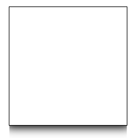

也就是正常而言，阴影应该是出现在多条边上的，而现在，我们只希望阴影固定只能出现在某一侧。
单侧阴影其实是一个非常老生常谈的话题，在 CSS 中之前也有比较巧妙的方式实现。当然，CSS 发展到今天，我们有了更多种不同方式来实现单侧阴影这个需求。本文，我们一共会介绍现阶段，实现单侧阴影可行的三种方式：
- 方法一：利用
overflow: hidden隐藏三边 - 方法二：利用
box-shadow扩张半径可为负值 - 方法三：使用 clip-path 实现任意方向上的裁剪
下面我们就一起来看看。
方法一：利用 overflow: hidden 隐藏三边
这个应该是最容易想到的方式了，其思路也非常好理解：
- 选定我们需要阴影的那一侧
- 另外三侧通过叠加一个容器，通过 overflow: hidden 解决
什么意思呢？通过下面这张示意图，一看就懂：

这样，利用父容器 overflow: hidden 的特性，我们将实际容器的 3 条边与父容器重叠，另外一侧留出足够的空间，这样就成功的实现了单侧投影。
完整的代码也很简单：
<div class="g-overflow"></div>
.g-overflow {
position: relative;
width: 200px;
height: 300px;
overflow: hidden;
&:before {
content: "";
position: absolute;
inset: 0 0 100px;
border: 1px solid #000;
box-shadow: 0 0 6px 2px;
}
}
效果如下：

方法二：利用 box-shadow 扩张半径可为负值
第二种方法属于经典老方法，也非常有意思。
我们来看看 box-shadow 的用法定义：
{
box-shadow: none | [inset? && [ <offset-x> <offset-y> <blur-radius>?
<spread-radius>? <color>?]]#;
}
以 box-shadow: 2px 4px 6px 8px #000 为例，其中的 4 个数值的含义分别是：
- x 方向偏移值；
- y 方向偏移值；
- 阴影的模糊半径；
- 阴影的扩张半径。
这里就需要介绍一个非常有用的技巧：阴影的扩张半径可以为负值。
什么意思呢？我们可以设置元素的阴影的模糊半径与它的扩张半径一样，但是，扩张半径为相等的负值。
此时，元素将看不到任何阴影，这是由于生成的阴影将被遮挡在整个元素之下。
基于这种情况，我们只需要再给元素设定任意一个方向的偏移值，即可实现某个方向上的单侧阴影效果：

如此一来，我们看看完整的代码：
<div class="g-shadow"></div>
div {
width: 200px;
height: 200px;
border: 1px solid #000;
box-shadow: 0 10px 8px -8px;
}
效果如下：

效果非常不错，当然，此种方式也有非常明显的缺点，就是阴影的大小相对元素而言较小，只能是缩在整个元素的下方。
譬如，我们将上述的阴影修改一些：
div {
/* ... */
box-shadow: 0 20px 20px -20px;
}
此时的效果：

我们很难将整个阴影效果，扩散到更大的范围，如果我们想实现下述这么一个单侧阴影：
观察上述的阴影效果，整个阴影的范围和延伸的长度会更大，但是上面的利用扩张半径可为负值的方法就不太适用了，随着阴影的扩张半径这个参数的越来越大，为了匹配对应边的偏移值以及保证阴影不在其它几条边出现，阴影会呈现逐渐向中心收缩的效果。
所以利用扩张半径可为负值的方法，一般只适用于幅度较为浅的单侧阴影效果。
方法三：使用 clip-path 实现任意方向上的裁剪
还有一种非常有趣的奇技淫巧。
我们都知道，clip-path 可以实现对容器区域的裁剪。
MDN - clip-path：属性使用裁剪方式创建元素的可显示区域。区域内的部分显示，区域外的隐藏。
大部分人都知道，可以使用 clip-path 在元素内部进行裁剪，譬如：

而大部分人可能不知道的是，我们还可以利用 clip-path 在元素的外部进行裁剪。利用这个技巧，我们也可以轻松的得到单侧阴影。
什么意思呢？看看下面的示意图你就明白了：

其中上图红框部分，就是 clip-path 代码发力的地方，它大概是这样：clip-path: polygon(0 0, 100% 0, 100% 200%, 0 200%);，元素区域外预留足够的空间，裁剪成一个矩形即可。
完整的代码如下：
<div class="g-clippath"></div>
.g-clippath {
position: relative;
width: 200px;
height: 200px;
border: 1px solid #000;
&::before {
content: "";
position: absolute;
inset: 0;
box-shadow: 0 0 6px 3px;
clip-path: polygon(0 0, 100% 0, 100% 200%, 0 200%);
}
}
效果如下：
此方式和上述第一种方式类似，但是场景会更加灵活。
上述三种方式，完整的代码及 DEMO 如下：CodePen Demo - Pure CSS 实现单侧阴影的多种方式